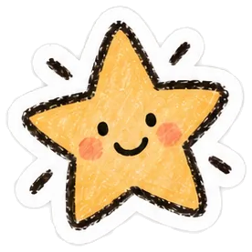

Stickers

Nobody asked. I made them anyway.
A little corner of the internet where my brain goes, “wait… what if I made a sticker for that?” Random thoughts. Weird ideas. Tiny obsessions. Basically, things that absolutely did not need to exist… but now they do.
Warning: you might want one.
60 stickers, free to take. Or click any one below for just that.